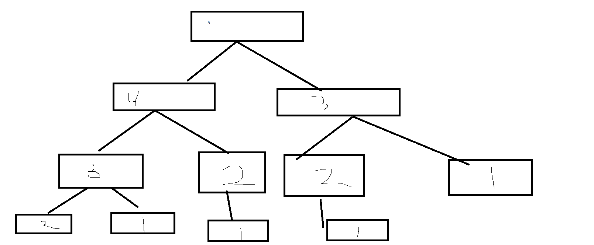

1. Recursion
1-1. Recursion이란 무엇인가
recursion, 사전적 의미로 반복, 되풀이라는 뜻입니다.
자료구조에서는 자기 자신을 호출하는 재귀함수의 의미를 대부분 나타냅니다.
2. 피보나치 수열
2-1. Recursion으로 나타낸 팩토리얼
바로 Recursion의 예시를 보여 드리겠습니다.
피보나치 수열은
F0 = 0
F1 = 1
Fn = Fn-1 + F n-2
int fibo( int num ){
if ( num == 0 ) return 0;
else if (num == 1) return 1;
else return fibo(num - 1) + fibo(num - 2);
}
하지만 피보나치 수열을 꼭 이런 방법으로만 구할 수 있는 건 아닙니다.
2-2. 반복문으로 나타낸 피보나치 수열
대부분의 Recursion은 반복문으로 표현할 수 있습니다.
int fibo( int num ){
int i;
int one = 1 , two = 1 , result = -1;
if (n == 1 || n ==2)
return 1;
else {
for (i =3 ; i < n ; i ++) {
result = one + two ;
one = two ;
two = result ;
}
}
return result;
}
2-3. Recursion vs 반복문
Recursion을 사용할때, 컴파일러는 내부 스택 메모리를 사용하고 됩니다. 그렇기 때문에, 메모리를 많이 찾이하여 성능의 저하가 일어날 수 있습니다.

또한 같은 값을 계산하는 함수가 여러번 호출 되기 때문에, 비효율적일때도 있습니다.
하지만 컴퓨터가 발전하고 메모리의 양이 늘어, 코드의 가독성을 중시하는 요즘 환경에서는 재귀함수 역시 좋은 선택이 될 거 같습니다.
3. 느낀점
이론적인 이야기가 많이 나와서, 어려웠습니다. 반복하면서 숙달해야겠다고 느낀 장이었습니다.